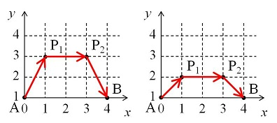

Project Euler 460
Project Euler 460
题目
An ant on the move
On the Euclidean plane, an ant travels from point \(A(0, 1)\) to point \(B(d, 1)\) for an integer \(d\).
In each step, the ant at point \((x_0, y_0)\) chooses one of the lattice points \((x_1, y_1)\) which satisfy \(x_1 \ge 0\) and \(y_1 \ge 1\) and goes straight to \((x_1, y_1)\) at a constant velocity \(v\). The value of \(v\) depends on \(y_0\) and \(y_1\) as follows:
If \(y_0 = y_1\), the value of \(v\) equals \(y_0\).
If \(y_0 \neq y_1\), the value of \(v\) equals \((y_1 - y_0) / (\ln(y_1) - \ln(y_0))\).
The left image is one of the possible paths for \(d = 4\). First the ant goes from \(A(0, 1)\) to \(P_1(1, 3)\) at velocity \((3 - 1) / (\ln(3) - \ln(1)) \approx 1.8205\). Then the required time is \(\sqrt{5} / 1.8205 \approx 1.2283\).
From \(P_1(1, 3)\) to \(P_2(3, 3)\) the ant travels at velocity \(3\) so the required time is \(2 / 3 \approx 0.6667\). From \(P_2(3, 3)\) to \(B(4, 1)\) the ant travels at velocity \((1 - 3) / (\ln(1) - \ln(3)) \approx 1.8205\) so the required time is \(\sqrt{5} / 1.8205 \approx 1.2283\).
Thus the total required time is \(1.2283 + 0.6667 + 1.2283 = 3.1233\).
The right image is another path. The total required time is calculated as \(0.98026 + 1 + 0.98026 = 2.96052\). It can be shown that this is the quickest path for \(d = 4\).

Let \(F(d)\) be the total required time if the ant chooses the quickest path. For example, \(F(4) \approx 2.960516287\).
We can verify that \(F(10) \approx 4.668187834\) and \(F(100) \approx 9.217221972\).
Find \(F(10000)\). Give your answer rounded to nine decimal places.
解决方案
我们先考虑连续下的版本，用来指导离散 DP 设计。把路径写成 \(y(x)\)。可以把整条路切成很多很短的小段，每一小段的耗时都是路程除以速度。小段路程用\(ds=\sqrt{dx^2+dy^2}=\sqrt{1+y'^2}dx\)近似。因此，在连续极限下，该点附近的速度可近似看成 \(v\approx y\)（由题目里的对数均值速度在微小变化时得到）。
所以这一小段时间为\(dt=\dfrac{ds}{v}\approx \dfrac{\sqrt{1+y'^2}}{y}dx.\)把从 \(x=0\) 到 \(x=d\) 的所有小段时间加起来，总时间就是\(\displaystyle T[y]=\int_0^d \frac{\sqrt{1+y'^2}}{y}dx.\)
接下来要做的是一个最优化问题：在所有可能的曲线 \(y(x)\) 中，找出使总时间 \(T[y]\) 最小的那一条。为此记\(L(y,y')=\dfrac{\sqrt{1+y'^2}}{y}.\) 由于 \(L\) 不显含自变量 \(x\)，可以直接使用变分法中的 Beltrami 恒等式（它是 Euler-Lagrange 方程在这种情形下的简化）：\(L-y'\dfrac{\partial L}{\partial y'}=C.\)
代入并令\(R=\dfrac{1}{C},\)得\(\dfrac{1}{y\sqrt{1+y'^2}}=\dfrac1R\Longrightarrow y\sqrt{1+y'^2}=R.\)整理为\(\dfrac{dx}{dy}=\dfrac{y}{\sqrt{R^2-y^2}},\)积分可得\(x=C-\sqrt{R^2-y^2}.\)由对称性，最高点在 \(x=d/2\)，可得圆方程\(\left(x-\dfrac d2\right)^2+y^2=R^2.\)再由端点 \((0,1)\) 得\(R^2=\left(\dfrac d2\right)^2+1,y_{\max}=R=\sqrt{\left(\dfrac d2\right)^2+1}.\)
所以当 \(d\) 很大时，最高高度非常接近 \(d/2\)，那么离散到整数层自然选 \(H=d/2\)。
若全程都在高度 \(H\) 匀速直走，时间基准是 \(d/H\)。真正路径可以看作：左半段：从 \((0,1)\) 爬升到高度 \(H\)；中间（可有可无）在 \(H\) 巡航；右半段对称下降回 \((d,1)\)。
把左半段中每一步的水平位移 \(\Delta x\) 从基准里抵扣掉（每单位水平距离可抵扣 \(1/H\) 时间），定义一步净耗时：\(\Delta C=\dfrac{\sqrt{\Delta x^2+\Delta y^2}}{v(y_0,y_1)}-\dfrac{\Delta x}{H}.\)
定义\(g(y)\)表示从\((0,1)\)爬升到高度\(y\)的最小净耗时。则答案是\(F(d)=\dfrac dH+2g(H).\)
设上一层是 \(y_0<y_1\)，\(\Delta y=y_1-y_0\)，则\(\displaystyle g(y_1)=\min_{y_0<y_1}\left\{g(y_0)+\min_{\Delta x\in\mathbb Z_{\ge0}} f(\Delta x)\right\},\)其中$ f(x)=-,v=.$
在上文，连续最优点应该为\(f'(x)=\dfrac{x}{v\sqrt{x^2+\Delta y^2}}-\dfrac1H.\)令 \(f'(x)=0\)，设 \(z=v/H\)，得\(x^{\ast}=\dfrac{z\Delta y}{\sqrt{1-z^2}}.\)这里需要 \(z<1\)。这在本题中成立：\(v\) 是对数均值 \(L(y_0,y_1)\)，满足\(L(y_0,y_1)<\dfrac{y_0+y_1}{2}<y_1\le H(y_0<y_1),\)因此 \(v<H\Rightarrow z<1\)。
可见，\(f''(x)=\dfrac{\Delta y^2}{v(x^2+\Delta y^2)^{3/2}}>0,\)所以 \(f\) 严格凸，整数最优一定在 \(\lfloor x^*\rfloor\) 或 \(\lfloor x^*\rfloor+1\)。这一步把每个 \((y_0,y_1)\) 还要枚举很多\(x\)降成 \(O(1)\)。
对固定 \(y_1\)，最优前驱不会离得太远，可由上式与半程水平预算推出同阶界\(\Delta y=O\left(\dfrac{d}{y_1}\right).\)实现中使用保守窗口\(y_0\in\left[y_1-\left\lfloor\dfrac{16d}{y_1}\right\rfloor,y_1-1\right]\)即可稳定得到最优值。
代码
1 | import math |